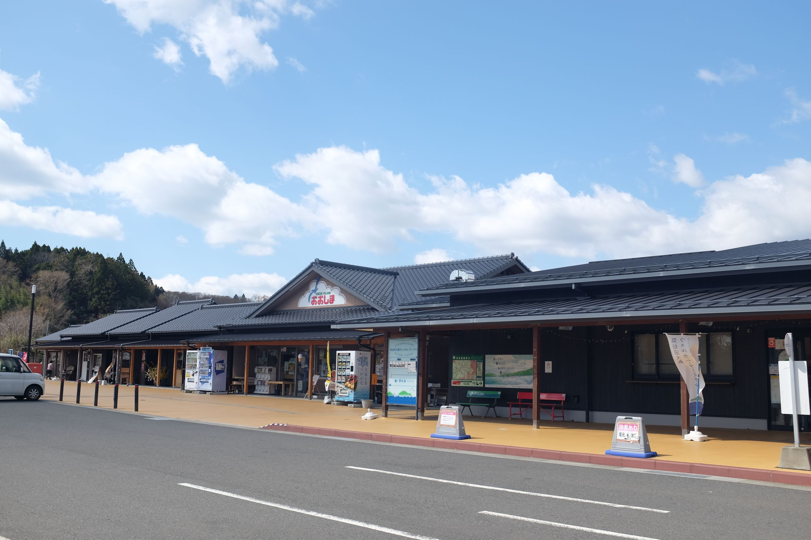
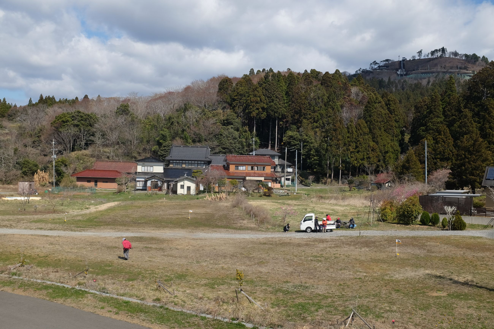
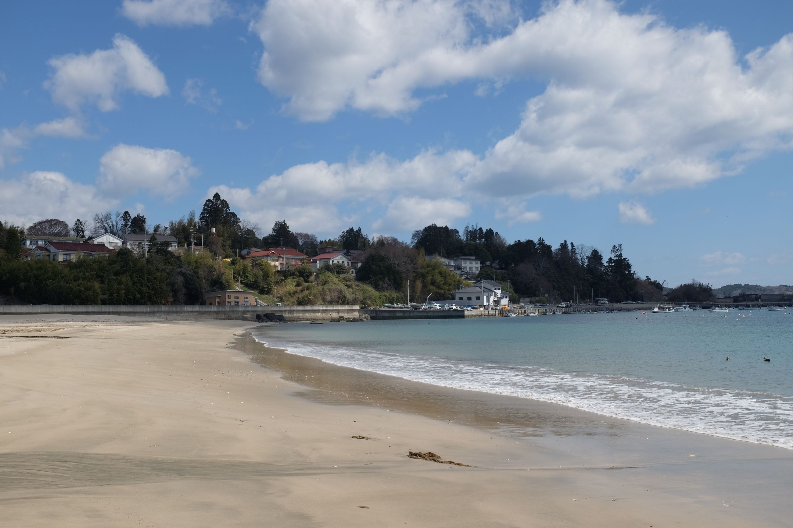
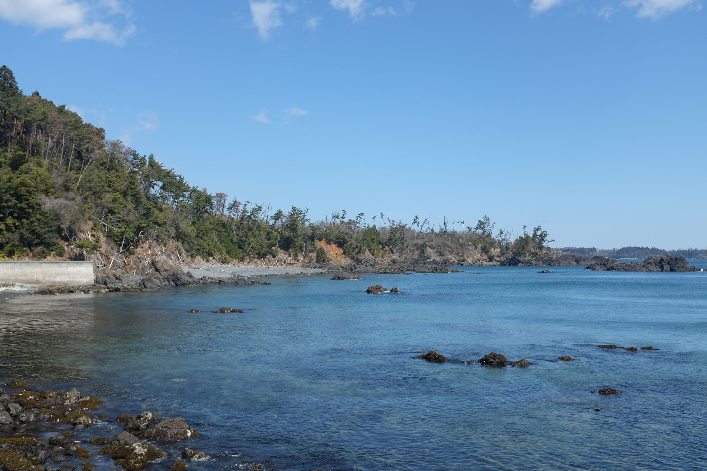
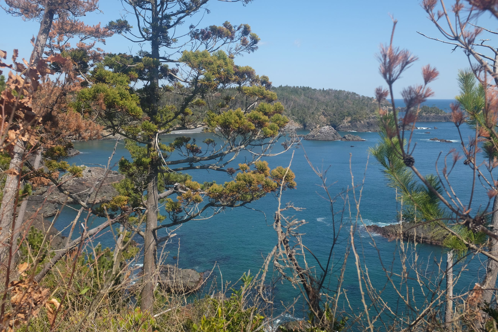
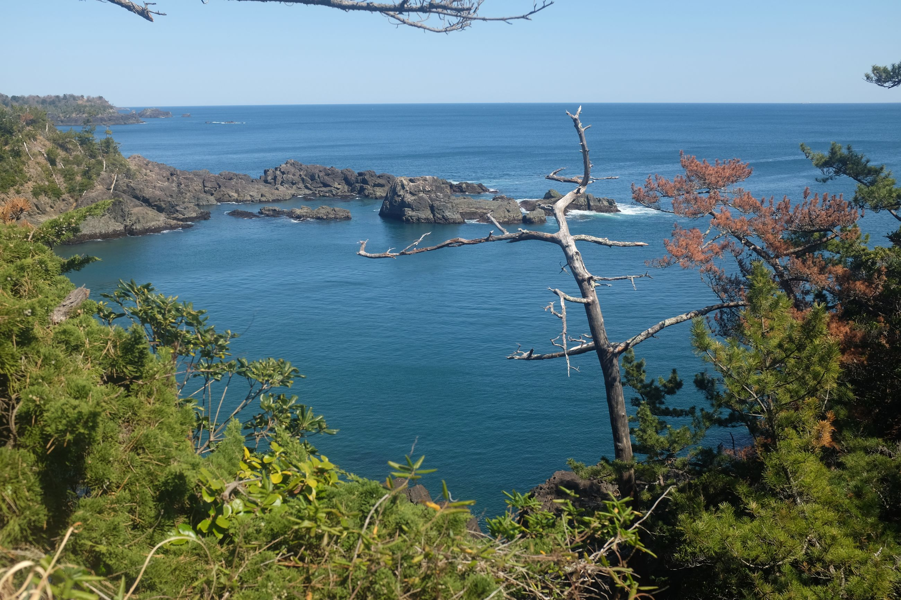
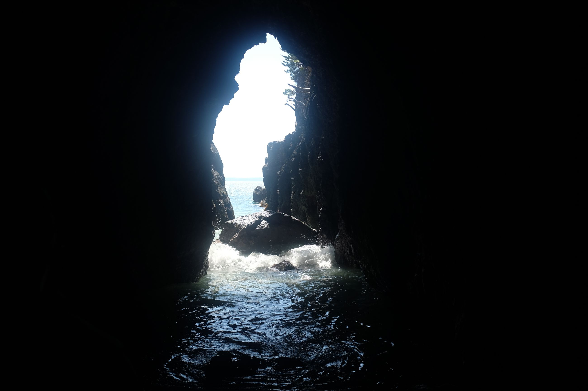

Making a loop around Oshima Island -- the island closest to Kesennuma.
More beaches, more amazing scenery, all with the sun out. We made a pit stop first at the visitor centre to get our stamp. It was quiet, not many shops had opened yet.

As we head into the mountains to get to the coast, we see some ladies playing a casual game of mini-golf. It seemed as if they were just sitting around having some tea, while one occasionally got up to move their body. They had several hole courses set up -- very cute countryside living.

As with any island hike, you guessed it, more beaches. We passed by Odanohama Beach. It was deserted, but calm. On a hot summer day, you could easily spend a day relaxing here. The water barely made a sound, and the sun was gentle on a spring day like today (~13 degrees). We also saw our first serow, a deer-goat native to Japan. No picture though, unfortunately, as they're easily spooked. One even sneered at us.

During the main ascent to Tatsumaizaki Cape, we saw a familiar site, but in a more miniature version. Again the pine trees lining the coast, with the occasional gap to peer out into the ocean. On a sunny day, the trees are more green and the oceans more blue.
  
There was even a small cave at Tatsumaizaki Cape that we went to see. Not much there, to be honest.

Ended the day back at the visitor centre, and had a nice yuzu ice cream and bowl of ramen. Then we headed back to Kessennuma. Probably one of the easier hikes of the day, and more enjoyable. A large part of this was because of the sun.